在zptcsoft.github.io的课程资源中第5个是有关sublime text的安装与说明和一些插件资源
1.点击进去并下载，以下为sublime text的安装过程
点击next
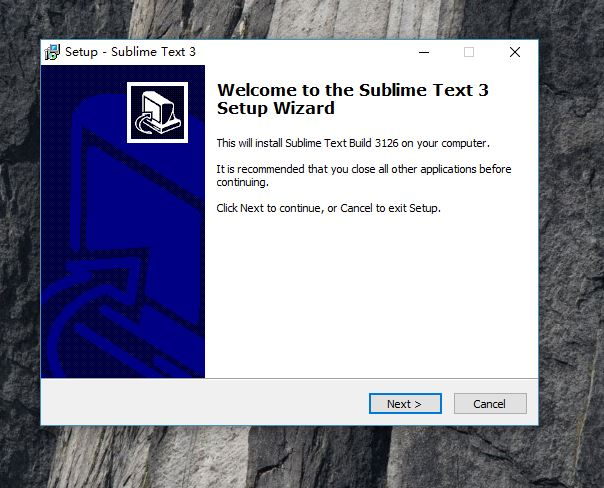
再选择下载的路径(也可以选择默认路径)，再next
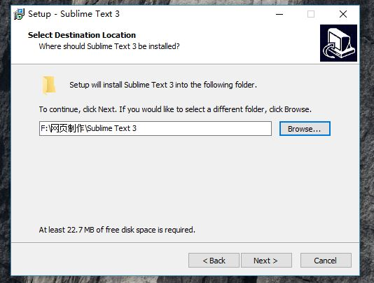
点击Install
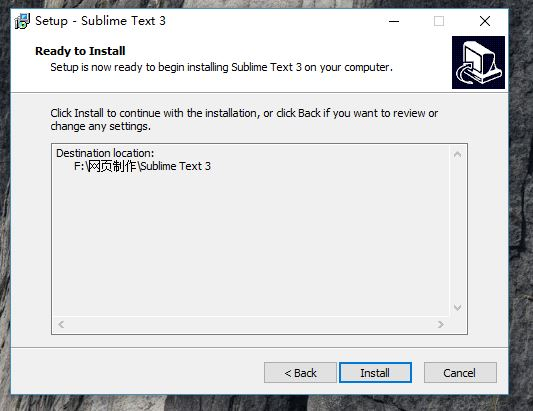
点击Finsh,sublime text完成安装
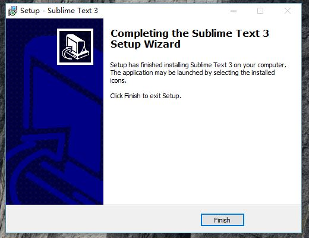
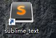
2.安装package control
打开sublime text,点击Ctrl+`打开命令窗口，将代码复制进去。1)若你所下的是sublime text2,则复制import urllib2,os,hashlib; h = '2915d1851351e5ee549c20394736b442' + '8bc59f460fa1548d1514676163dafc88'; pf = 'Package Control.sublime-package'; ipp = sublime.installed_packages_path(); os.makedirs( ipp ) if not os.path.exists(ipp) else None; urllib2.install_opener( urllib2.build_opener( urllib2.ProxyHandler()) ); by = urllib2.urlopen( 'http://packagecontrol.io/' + pf.replace(' ', '%20')).read(); dh = hashlib.sha256(by).hexdigest(); open( os.path.join( ipp, pf), 'wb' ).write(by) if dh == h else None; print('Error validating download (got %s instead of %s), please try manual install' % (dh, h) if dh != h else 'Please restart Sublime Text to finish installation')；
2)若是sublime text3,则复制import urllib.request,os,hashlib; h = '2915d1851351e5ee549c20394736b442' + '8bc59f460fa1548d1514676163dafc88'; pf = 'Package Control.sublime-package'; ipp = sublime.installed_packages_path(); urllib.request.install_opener( urllib.request.build_opener( urllib.request.ProxyHandler()) ); by = urllib.request.urlopen( 'http://packagecontrol.io/' + pf.replace(' ', '%20')).read(); dh = hashlib.sha256(by).hexdigest(); print('Error validating download (got %s instead of %s), please try manual install' % (dh, h)) if dh != h else open(os.path.join( ipp, pf), 'wb' ).write(by)
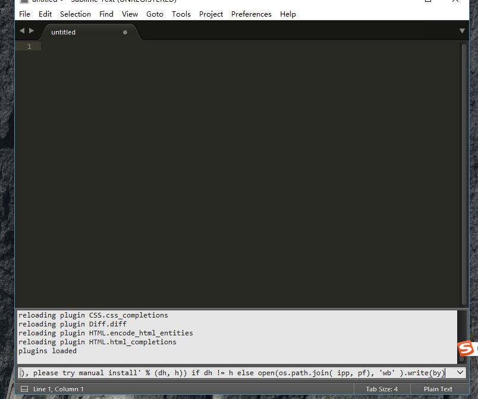
跳出小窗口，点击“确定”，完成package control安装,
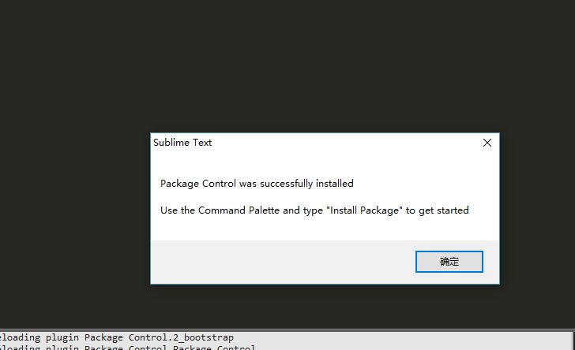
3.安装Emmet插件
打开sublime text,选择菜单Preferences,点击package control,或者点击组合键Ctrl+Shift+P,跳出窗口输入Install package并选择它
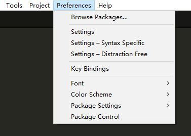
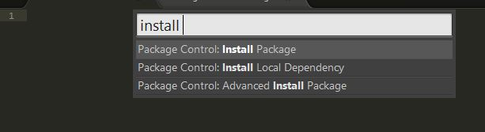
跳出窗口，再输入Emmet,选择Emmet插件安装
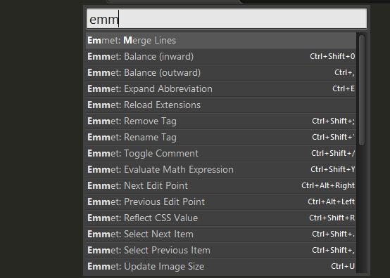
完成Emmet插件安装，可在Preferences/package settings中查看
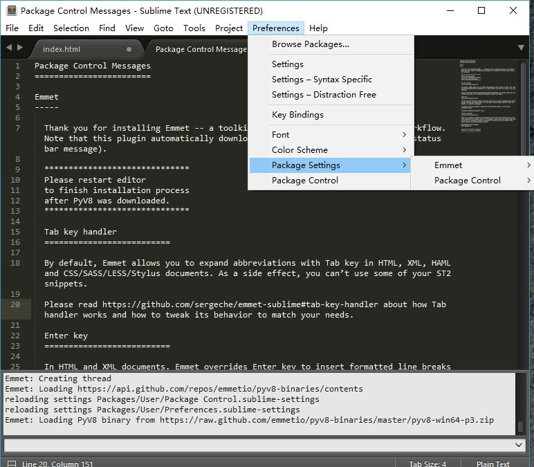
输入“！”，再点“Tab”键，可以快速显示出基本架构，输入便捷
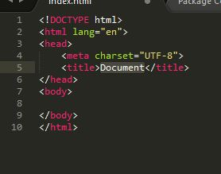
也可以安装其他插件。